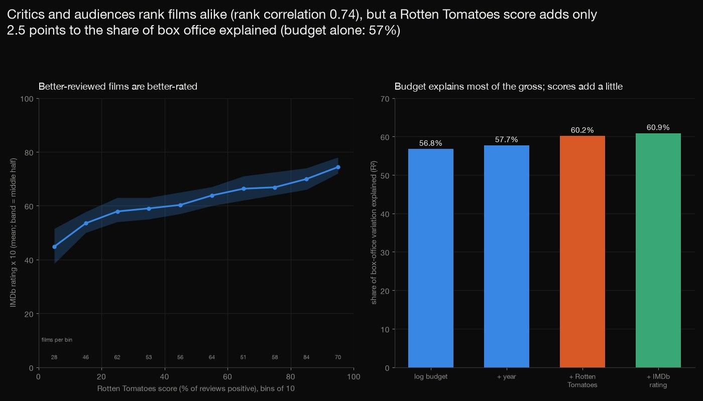
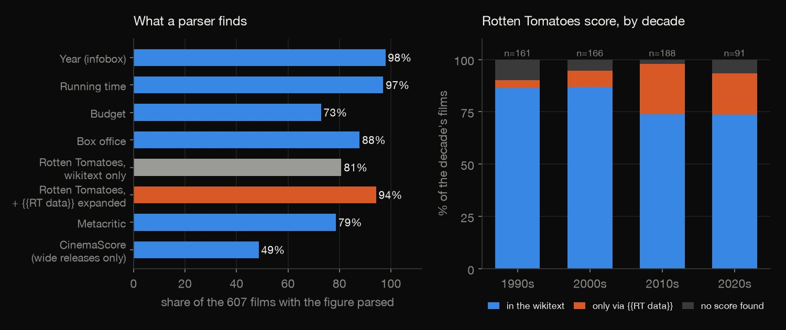
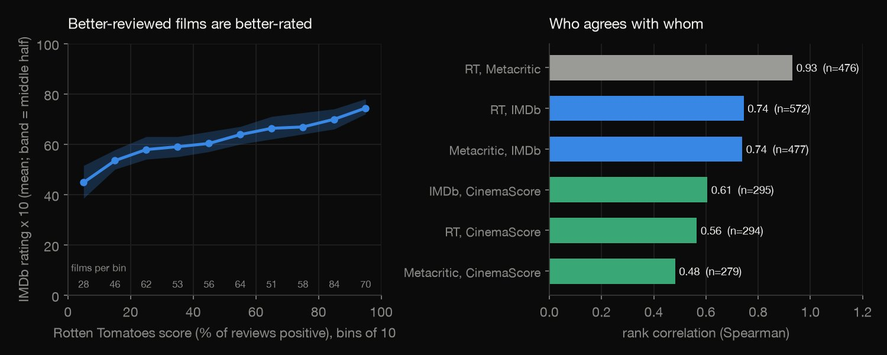
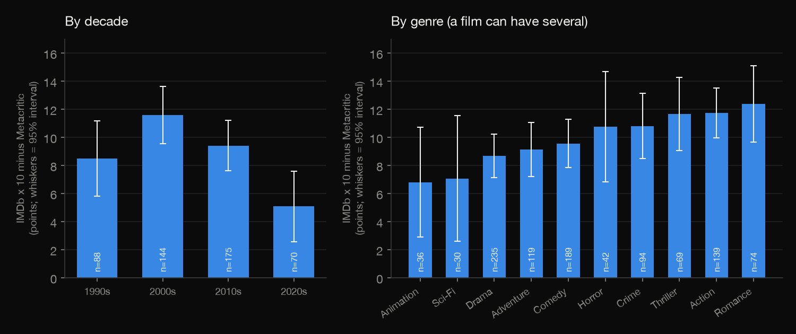
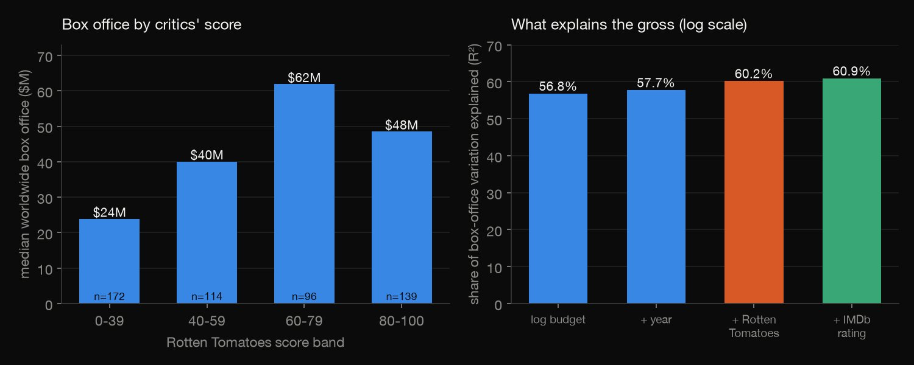
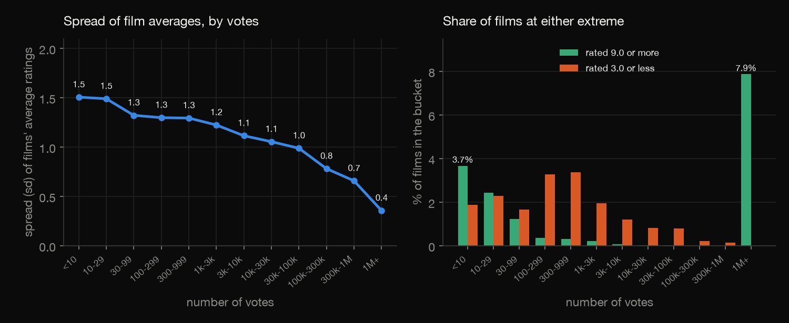

Python · Entertainment analytics · 2026-10
Do critics' scores predict film audiences and box office?
On 607 Wikipedia film articles, critics and audiences rank films alike (Rotten Tomatoes vs IMDb rank correlation 0.74) and audiences score 9 points above Metacritic. Budget explains 57% of box-office variation; a Rotten Tomatoes score adds 2.5 points. A wikitext parser alone misses 82 scores.

The sample is films with Wikipedia articles: American films of 1990 to 2024 plus the 50 highest-grossing, not films in general. Scores are as Wikipedia quotes them, at different dates; box office and budget are infobox figures. Associations, not effects. Wikipedia text is CC BY-SA 4.0 (fetched through the API, not redistributed); IMDb's non-commercial datasets are used for aggregates only (information courtesy of IMDb). No review site is scraped.
01 — The problem
Reviews, ratings and takings are three ways of asking whether a film was any good. Do critics' scores predict what audiences think of a film and what it earns, and what does the way the scores are collected hide?
The task follows GeeksforGeeks' "Movies Review Scraping And Analysis". Scraping review sites is not allowed here, so the scores are the ones Wikipedia quotes (parsed from the wikitext through its API), and the audience ratings come from IMDb's official non-commercial files, joined through Wikidata ids.
02 — What I built
607 films, read four ways:
- The parse: infobox figures and the Rotten Tomatoes, Metacritic and CinemaScore sentences, with a parse rate for every field and a look at who the failures are.
- Critics against audiences: rank correlations and the gap between IMDb and Metacritic by decade and genre.
- Box office: score bands and regressions on budget, year and scores.
- The selection and the votes: the sample against all 349,571 rated IMDb movies, and Bayesian averages for films with few votes.
- Check:
check.pyre-parses all 607 films and recounts 642 numbers in plain Python, with no data or statistics library.
03 — How it was built
- 01
Draw the sample and fetch the articles
The 50 films of the highest-grossing ranking, and 16 films at random (a fixed seed) from the monthly tables of each "List of American films of YEAR", 1990 to 2024. The wikitext of each article comes through the MediaWiki API, one request at a time, with a descriptive User-Agent; Wikidata gives the IMDb id; IMDb's two official files (237 MB) are fetched but never committed.
sample = [{"title": t, "stratum": "A", "year": None} for t in top[:50]] - 02
Parse the infobox money
Budget and box office are free text: "$160 million", "$6-7 million", "$1.243 billion", "£5m", {{US$|3 million}}. A rule classifies each as single, range (midpoint), non-dollar, unparsed or missing, in US$ millions, so the failures can be counted instead of silently dropped. A first version read "$200{{nbsp}}million" as $200, because the unit hid behind a template, and made dozens of figures a million times too small; listing the smallest values next to their raw text exposed it, and this line is part of the fix.
v = re.sub(r"\{\{\s*nbsp\s*\}\}", " ", v, flags=re.I) - 03
Find the quoted scores
Each "Rotten Tomatoes" and "Metacritic" mention is taken with its sentence: the first percentage (or "N out of 100") in that sentence is the score, the "based on N reviews" the count, an "As of" phrase the date. Where the article only says
{{RT data|score}}, the API expands the template in the article's context.p = re.search(r"(\d{1,3}(?:\.\d+)?)\s?%", w) - 04
Regress box office and scores
Log box office on log budget, year and the scores, and each score on year and log budget, by ordinary least squares on the films that have every variable; rank correlations (average ranks for ties) for the pairs of scores; the gap is IMDb x 10 minus Metacritic.
beta = np.linalg.solve(X.T @ X, X.T @ Y); e = Y - X @ beta - 05
Recount it all without the libraries
check.pyparses every article again with its own scanners and expressions, compares all 607 films' 16 fields with the first parse, then recomputes every table with csv, gzip, json and loops, solving each regression by Gauss-Jordan elimination: 642 numbers to a relative tolerance of 1e-8.beta = solve([[sum(row[i] * row[j] for row in X) for j in range(k)] for i in range(k)], [sum(row[i] * yy for row, yy in zip(X, Y)) for i in range(k)])
04 — Results
What parsed. 607 articles (50 from the highest-grossing ranking, 557 drawn at random from the American film lists of 1990 to 2024). The table gives the films with each figure parsed and the films without. Budget is missing for 156 films, a range for 70 (read as the midpoint), in another currency for 9.
| Figure | Parsed | Missing |
|---|---|---|
| Year | 98% | 13 |
| Running time | 97% | 18 |
| Budget | 73% | 165 |
| Box office | 88% | 74 |
| RT, wikitext | 81% | 117 |
| RT, + template | 94% | 35 |
| Metacritic | 79% | 130 |
| CinemaScore | 49% | 312 |

A wikitext parser alone loses recent films. For 82 films the Rotten Tomatoes figure is not in the wikitext at all: the article writes {{RT data|score}} and the number is pulled from Wikidata when the page is drawn. Expanding the template through the API lifts Rotten Tomatoes from 81% to 94%. The 35 films with no score are small and old: median box office $2.0M against $35.7M, and the 165 films without a budget have a median of $1.3M against $54.8M, so any budget analysis is of the bigger films. Quoted scores hold up and are rarely dated: for the 46 films with both a quoted and a current Wikidata score, 61% agree exactly, 89% are within a point and the mean difference is 0.65 points; only 29% of scores carry a date. After two parser fixes (a unit trap and a wrong-sentence bug), 52 random scores read by hand were all right.
Critics and audiences rank films alike. Rotten Tomatoes and IMDb have a rank correlation of 0.74, Metacritic and IMDb 0.74, the two critics' scores 0.93. CinemaScore, the opening-night audience grade, tracks IMDb (0.61) better than the critics (0.56 and 0.48), and its rank correlation with box office is 0.53 (wide releases only, a 13-step scale), against 0.32 for IMDb, 0.18 for Rotten Tomatoes and 0.14 for Metacritic, each on a different set of films (the table gives the counts).
| Pair | Films | Rank corr. |
|---|---|---|
| RT, Metacritic | 476 | 0.93 |
| RT, IMDb | 572 | 0.74 |
| Metacritic, IMDb | 477 | 0.74 |
| IMDb, CinemaScore | 295 | 0.61 |
| RT, CinemaScore | 294 | 0.56 |
| RT, box office | 521 | 0.18 |
| IMDb, box office | 533 | 0.32 |
| CinemaScore, box office | 295 | 0.53 |

Audiences are more generous, most in the 2000s. IMDb x 10 is 9.3 points above Metacritic on average (477 films, standard error 0.6): 11.6 in the 2000s, 5.1 in the 2020s. The table gives the gap by genre (a film can have several; whiskers in the chart are 95%, so the small genres cannot be told apart).
| Genre | Films | Gap |
|---|---|---|
| Animation | 36 | 6.8 |
| Sci-Fi | 30 | 7.1 |
| Drama | 235 | 8.7 |
| Adventure | 119 | 9.1 |
| Comedy | 189 | 9.6 |
| Horror | 42 | 10.8 |
| Crime | 94 | 10.8 |
| Thriller | 69 | 11.7 |
| Action | 139 | 11.7 |
| Romance | 74 | 12.4 |

Budget explains most of the box office; the critics' score adds a little. The median gross rises from $24M to $62M across the Rotten Tomatoes bands, then falls back to $48M. Budget alone explains 56.8% of the variation in log box office; year adds 0.9 points, the Rotten Tomatoes score 2.5 (ten more points go with about 13% more box office, budget and year held fixed) and the IMDb rating 0.7 more. Budget and year explain 3.1% of Rotten Tomatoes scores, 0.8% of Metacritic's and 5.7% of IMDb's. None of this says what reviews do to a release: budgets are set for expected audiences, and the films here all have a budget, a score and a gross.
| RT score | Films | Median | $100M+ |
|---|---|---|---|
| 0-39 | 172 | $24M | 20% |
| 40-59 | 114 | $40M | 33% |
| 60-79 | 96 | $62M | 39% |
| 80-100 | 139 | $48M | 37% |
| Explains | Films | R² |
|---|---|---|
| Gross: budget | 429 | 56.8% |
| + year | 429 | 57.7% |
| + RT score | 429 | 60.2% |
| + IMDb | 429 | 60.9% |
| RT: year, budget | 433 | 3.1% |
| Metacritic: same | 395 | 0.8% |
| IMDb: same | 442 | 5.7% |

The selection trap. The 50 highest-grossing films have a median box office of $1,336M against $27M for the random films, and a higher median score, rating and vote count. But the random films are no baseline either: the median film in the sample has 36,841 IMDb votes, more than 98.4% of the 349,571 rated movies (the median movie has 64). Wikipedia writes about films that were noticed.
| Median | Top 50 | Random |
|---|---|---|
| Box office | $1,336M | $27M |
| Budget | $204M | $25M |
| RT score | 86 | 52 |
| IMDb rating | 7.4 | 6.3 |
| IMDb votes | 676k | 33k |
Few votes, extreme high averages. Of the 4,566 IMDb movies averaging 9.0 or more, 4,164 (91%) have fewer than 100 votes and 10 have 10,000 or more. The table shrinks each average toward the mean (6.15) with a prior worth 10, 100 or 1,000 votes (chosen, not estimated). Films rated 3.0 or less peak elsewhere (3.4% of films with 300-999 votes). For Rotten Tomatoes the spread of scores is 29 points with fewer than 30 reviews and 23 with 200 or more, but those are different films (mean score 43 against 72).
| Prior (votes) | 9.0+ left | 9.0 at 50 votes |
|---|---|---|
| None (raw) | 4,566 | 9.0 |
| 10 | 334 | 8.5 |
| 100 | 47 | 7.1 |
| 1,000 | 5 | 6.3 |

05 — What I'd do next
- Read a hand-checked sample of the parse misses, to separate parser errors from true absences, and give the correlations bootstrap intervals.
- Draw the sample from all films of a year (from IMDb's title list) instead of from Wikipedia's lists, to measure the selection directly.
- Use Wikidata's dated review scores (it keeps the retrieval date) to see how a film's Rotten Tomatoes score drifts after release.